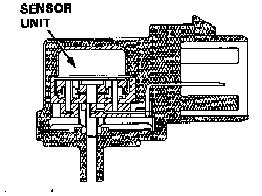

Manifold Pressure/Vacuum Sensor: Description and Operation
MAP Sensor Sectional View:

PURPOSE
The Engine Control Module (ECM) uses the Manifold Absolute Pressure (MAP) sensor signal to sense engine load so that ignition timing and fuel delivery can be adjusted to maintain consistent engine performance
OPERATION
The ECM supplies a 5 volt signal and a ground to the sensor. A vacuum line supplies intake manifold vacuum to a small cavity under the silicon diaphragm which causes the diaphragm to flex. The flexing of the silicon generates a small voltage which is amplified by the support circuitry and used to modify the fixed 5 volt signal supplied by the ECM. The modified signal is then returned to ECM.
CONSTRUCTION
The sensor consists of a silicon diaphragm and some support circuitry.